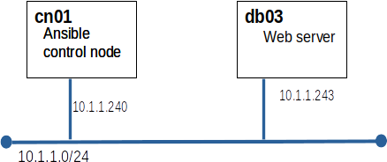

This evaluation must be completed in class
| db01 built and patched | 1 |
| Ansible | 3 |
| GIT | 3 |
| nftables | 3 |
| Total | 10 |
Today you will use Ansible to configure a new database server.

Create a playbook to install mariadb on db03
We will use GIT to track changes to our playbooks.
Just for fun, and grades, we will switch from firewalld to nftables on cn01
table inet test3_inet_table {
chain input {
type filter hook input priority 0; policy drop
# allow connections we know about
# allow new tcp connections to port 22 (ssh)
# allow local traffic
# accept all icmp packets (v4 and v6)
}
}